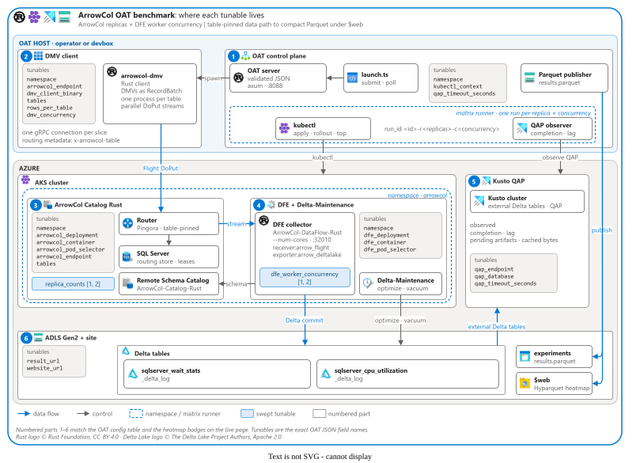

ArrowCol OAT benchmark
ArrowCol replicas × DFE worker concurrency · results from the published compact Parquet file
Explore results
Results
| Mode | Stamp | Experiment | Status | Pinning | Run | ArrowCol replicas | DFE workers | Pinned table | Table owner | Clients | Rows | Duration (ms) | Rows/s | CPU (mCPU) | Memory (MiB) | QAP fields complete | QAP tables | QAP complete (%) | Pending artifacts | Cached (MiB) | Unhealthy catalogs | QAP lag (s) | Host | Started (UTC) | Measure (s) | Tables | Git SHA | Tunables |
|---|---|---|---|---|---|---|---|---|---|---|---|---|---|---|---|---|---|---|---|---|---|---|---|---|---|---|---|---|
| Loading… | ||||||||||||||||||||||||||||
Summary values and heatmap ranges use all rows matching the current filters, including failed and pinning-violation rows; they are not success-only performance claims. Throughput and duration measure client admission, not durable Delta/QAP publication. Missing metrics appear as —, not zero. “QAP fields complete” is 1 only when all required telemetry fields were observed; it is separate from QAP completion percentage.
The static site and its Parquet file are anonymously readable. Only publish approved, nonsensitive benchmark summaries here; never include credentials, raw payloads, or sensitive identifiers. The viewer loads results.parquet from this same origin, so no cross-origin request or CORS rule is required.
Benchmark architecture
Numbered parts 1–6 identify where each tunable and result field belongs in the stack below.

Configuration reference
OAT JSON tunables are mapped to the numbered stack parts they configure.
| OAT JSON field | Affects | Purpose |
|---|